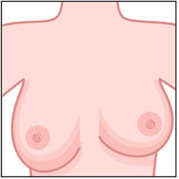
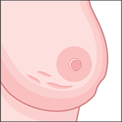
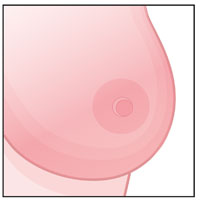
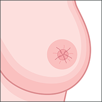
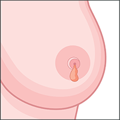
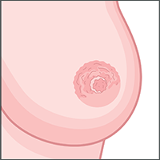

The earlier breast cancer is diagnosed, the better the chance of successful treatment. So it's important to check your breasts regularly.
How should I check my breasts?
There’s no special technique and you don’t need training to check your breasts. Everyone’s breasts are different, so get to know how your breasts normally look and feel. That way, it’s easier to spot anything unusual.
Remember to check the whole breast area, including your upper chest and armpits.
If you spot any changes to your breasts, make sure you get checked by your doctor as soon as possible.
What should I be looking for?
Lumps are important to look for, and can be the first symptom of breast cancer for many women. But there are other signs and symptoms you should look out for.
Pain in your breasts is not normally a sign of breast cancer, but it can be if it is associated with other symptoms. While most pain is not usually a symptom, it’s important to look out for any pain that is unusual and persists over a period of time.
It’s as simple as TLC: Touch Look Check
TOUCH your breasts. Can you feel anything unusual?
Lump - may not be seen, but might be felt.
Can you feel a lump or swelling in the breast, upper chest or armpit? You might feel the lump, but not see it.
LOOK for changes. Is there any change in shape or texture?

Change to size or shape?
Can you see any change in size or shape? For example, one breast might become larger or lower than the other.

Change to skin texture
Is there any change in skin texture? This might be puckering or dimpling of the skin of the breast.

Colour change
Can you see a change in colour? The breast may look red or inflamed.
Change in nipples
Do either of your nipples look different? For example, one of them might become inverted (turned in) when it normally points out.

Nipple discharge
Have you noticed any unusual discharge from either of your nipples?

Rash or crusting
Can you see any rash or crusting of the nipple or surrounding area?
CHECK anything unusual with your doctor.
Have you felt or seen anything unusual? If so, make sure you get checked out by your doctor or nurse as soon as possible.
It’s important to continue to check even if you are having regular screening.
Having some of these symptoms doesn’t necessarily mean you have breast cancer, but it’s important to get checked out if you are worried.
If your doctor thinks you need any further testing, they will refer you to a breast clinic to see a specialist.
How often should I check my breasts?
It doesn’t matter when you check your breasts, as long as you check them regularly. This could be every month, or every couple of months. You could check while you’re in the bath or shower, after the gym or before bed.
When you get to know your breasts, you might notice they change with age, or at different times of the month. For example, your breasts might feel tender and lumpy around the time of your period. You may also experience normal changes during pregnancy, when your breasts may get bigger and feel tender or sore.